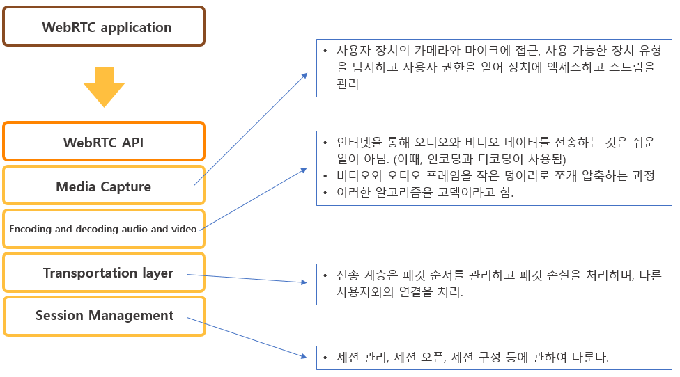
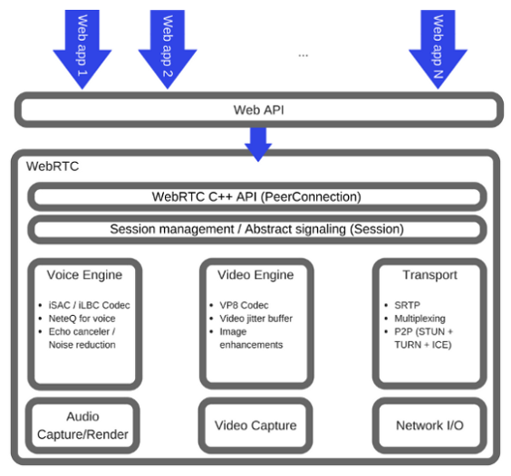

CMS
소개
조원
기술
Tensorflow JavaScript
Tensorflow/KERAS
Tensorflow Lite
webRTC
접속하기
로그인
회원가입
마스크 쓰기 생활화
호로록조가 함께 합니다.
WebRTC(Web Real-Time Communication)
WebRTC을 통해, 현대의 웹 애플리케이션은 수백만 명의 사람들에게 오디오와 비디오 컨텐츠를 쉽게 스트리밍 할 수 있습니다.
2011년 5월 출시되었고, 아직 개발 중이며 기준도 바뀌고 있습니다.
IETF (Internet Engineering Task Force)
: http://tools.ietf.org/wg/rtcweb/
W3C (World Wide Web Consortium)
: http://www.w3.org/2011/04/webrtc/
오픈소스
: http://www.webrtc.org/
WebRTC는 다른 웹 브라우저에 대한 Peer-To-Peer 연결을 빠르고 쉽게 설정 할 수 있도록 해줍니다.
WebRTC는 이 모든 것이 브라우저의 기본 제공으로 제공됩니다.
WebRTC API에는 미디어 캡처, 인코딩 및 디코딩, 오디오 및 비디오, 전송 계층, 세션 관리 등이 포함 됩니다.
Basic Scheme

WebRTC Architecture

사용 사례
문자 기반 채팅, 화면 및 파일 공유, 게임, 비디오 채팅 등을 포함한 새로운 범위의 어플리케이션
real-time marketing
real-time advertising
back office communications (CRM, ERP, SCM, FFM)
social networking
HR management
dating services
online medical consultations
financial services
surveillance
multiplayer games
live broadcasting
e-learning